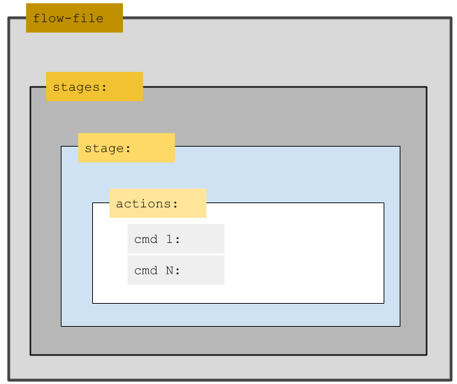

flow
The liquibase flow command creates portable, platform-independent Liquibase workflows that can run anywhere without modification. This includes Jenkins, GitHub actions, a developers desktop, or any other CI/CD support tool.
Flow allows you to put multiple commands in a single file, called a Flow File, so they can all run sequentially by typing a single command into the CLI. The flow command provides the convenience of performing all of the steps in one place. This leads to better repeatability and standardization of the steps in a DevOps pipeline.
You can modify the Flow File to update the Liquibase steps specified in each Stage. You only have to update them in the Flow File to bring all jobs up to date. It is necessary to store Flow Files in remote locations or share across teams to enable this flexible behavior.
Note: The flow feature requires Liquibase 4.17.0+.
You can also use the flow file to run Quality Checks on your changelog or database. In Liquibase 4.24.0+, flow files running quality checks exit with a return code matching the highest return code triggered by any check.
Create a Flow File
There are two ways to create a Flow File:
- The Default Flow File method, which runs on H2 by default
- The Existing Project method – advanced
Default Flow File method
This method is for creating an entirely new project.
- Run the
liquibase flowcommand. - Select option
3: Generate a flow file and exit. - Open the newly created file and review the sections and comments.
Validation
Once the Flow File is written, you can verify that it works by using the flow validate command. This ensures that the Liquibase commands have all of the parameters necessary to run successfully and the YAML formatting is correct. See the Syntax section for more information. In the CLI, run this command:
flow validate --flow-file=update-status-diff.flowIf the file fails the validation check, Liquibase will state what command argument(s) were not resolved. You can then review and correct your Flow File and then run the flow validate command again to ensure it is working as expected.
Outside the CLI, you can use the LIQUIBASE_COMMAND_FLOW_FILE environment variable or the liquibase.command.flowFile property.
Organization
The Flow File contains one or more Stages and Actions. Below are definitions of these and a visual aid.

Stages are bundles of related actions in the Flow File. You can add a single action or multiple actions per Stage.
Actions are individual About Liquibase Commands or Shell Commands that execute within stages or endStage as part of the Flow File. Any Liquibase command arguments (abbreviated as cmdArgs in the Flow File) can be placed in any action section, with the exception of the following global arguments:
You must use the following commands and global arguments in the CLI instead of the Flow File:
Incompatible commands
init start-h2– This command locks the console
Incompatible global arguments
ARGUMENT_CONVERTERCLASSPATHDEFAULTS_FILEINCLUDE_SYSTEM_CLASSPATHLOG_CHANNELSLOG_FILELOG_LEVELMONITOR_PERFORMANCEPROMPT_FOR_NON_LOCAL_DATABASESEARCHPATHSHOULD_RUNSHOW_BANNER
Syntax
The Liquibase Flow File is written in YAML. To run Liquibase commands in actions, set the type argument for that action to liquibase. To run shell commands in actions, set the type argument for that action to shell.
Command arguments use the following format:
cmdArgs: {argument: value, snapshot-format: JSON}This example Flow File is the simplest scenario in which only cmdArgs are specified in the actions:
## Note: Any command which fails in any stage below result in the command stopping, and endStage being run.
## A flow file can have one or more stages, each with multiple "actions",
## or your flow file can have multiple stages with fewer actions in each stage.
stages:
## The first stage of actions.
Default:
actions:
# Quality Checks for changelog
- type: liquibase
command: checks run
cmdArgs: {checks-scope: changelog}
# Run the update
- type: liquibase
command: update
# Quality Checks for database
- type: liquibase
command: checks run
cmdArgs: {checks-scope: database}
## The endStage ALWAYS RUNS.
## So put actions here which you desire to perform whether previous stages' actions succeed or fail.
## If you do not want any actions to ALWAYS RUN, simply delete the endStage from your flow file.
endStage:
actions:
- type: liquibase
command: historyNote: For this example to run, a changelog file and a liquibase.properties file with url, username, and password must be available. The liquibase.properties file should be in the same directory as the flow file.
Global arguments
Tip: For best results, specify all commands and parameters in the --kebab-case format in the CLI. If your preference is camelCase, it also works in the CLI.
| Attribute | Definition | Requirement |
|---|---|---|
--license-key
|
Your Liquibase Pro license key |
Required |
Command arguments
| Attribute | Definition | Requirement |
|---|---|---|
--flow-file
|
The path to the configuration YAML file which
contains one or more "stages" of commands to be
executed in a |
Optional |
--flow-file-strict-parsing=<true|false>
|
If true, parse flow file YAML to allow only Liquibase flow file-specific properties, indentations, and
structures.
Default: |
Optional |
--flow-shell-interpreter
|
The default interpreter used to execute shell commands. |
Optional |
--flow-shell-keep-temp-files=<true|false>
|
If true, do not delete temporary files created by the shell
command execution.
Default: |
Optional |